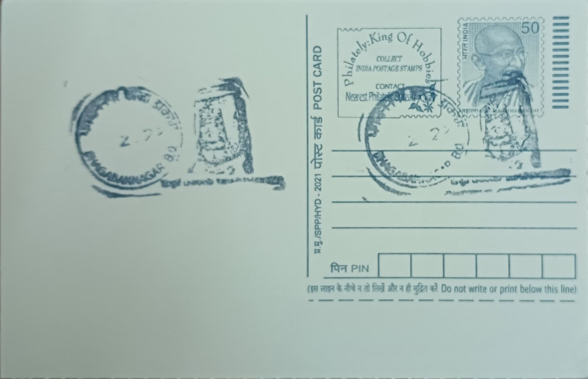

Trimurti Rock Sculpture
উনকোটির ত্রিমূর্তি শিলাখোদাই


The Trimurti panel at Unakoti belongs to a sprawling complex of rock-cut and stone-built sculptures spread across a forested hillside near Kailasahar in what is now Unakoti district, Tripura. The site's name, meaning "one less than a crore," derives from a local legend holding that a crore of gods once traveled with Shiva and paused here overnight, only to be turned to stone by dawn when all but one failed to awaken in time, leaving behind the countless carved and bas-relief figures, including composite groupings such as the Trimurti, that still cover the rock faces today.
As a devotional ensemble, the Trimurti carving represents the three personified cosmic functions of Hindu theology, Brahma as creator, Vishnu as preserver, and Shiva as destroyer, rendered together within the same Shaivite sculptural programme that dominates Unakoti. The site as a whole is recognised as one of the largest rock-cut sculptural complexes in Eastern India and figures on UNESCO's tentative World Heritage list, valued for combining monumental Hindu iconography with the distinct artistic idiom of the Northeast. The presence of a Trimurti image alongside the towering Unakotiswara Shiva head underscores the breadth of theological subject matter the ancient sculptors chose to depict, rather than limiting the site to Shiva imagery alone.
Stylistic analysis places the bulk of Unakoti's carvings, the Trimurti among them, between the seventh and ninth centuries CE, a period associated with the Deva dynasty of ancient Samatata, which is credited with patronising the site's rock-art tradition before the later rise of the Tripura Manikya kings. The sculptures were cut directly into natural rock outcrops and boulders rather than built up as masonry, a technique that produced the colossal Shiva head, standing roughly 30 feet high including its headdress, as well as numerous subsidiary panels of Ganesha, Durga, Kartikeya, Nandi, and the Trimurti grouping, executed in a bas-relief style that blends Pala-period artistic conventions from Bengal with motifs attributed to local Kirata and Tripuri craftsmanship.
A distinguishing feature of the Unakoti complex, within which the Trimurti sculpture sits, is the sheer density and variety of its stone imagery, which includes not only large standing and seated figures but also smaller votive carvings scattered along the stream bed and hillside, some partly submerged or weathered by seasonal water flow. Only one dated inscription survives at the site, in Bengali characters of roughly the eleventh or twelfth century, naming a pilgrim called Jayadeva, which has helped scholars anchor the broader chronology even though most individual panels, including the Trimurti, carry no inscriptions of their own and are dated instead by stylistic comparison.
The site today falls under the care of the Tripura state archaeology and museums department, which has carried out conservation and clearing work around the carvings, and it draws its largest crowds each year during the Ashokastami Mela held in the Chaitra month, when pilgrims and tribal communities from across the region gather at Unakoti for worship and a seasonal fair. Scholars and heritage researchers continue to study the Trimurti and its neighbouring panels as part of ongoing documentation tied to the UNESCO tentative listing, work that has kept this relatively remote Tripura hillside on the itinerary of specialists in early medieval Indian sculpture even as it remains an active place of pilgrimage for local worshippers.
| Date of Introduction | January 1, 1976 |
|---|---|
| Address | Branch Postmaster, |
| Bhagabannagar BO, | |
| Unakoti (dt.), Tripura - 799282. |